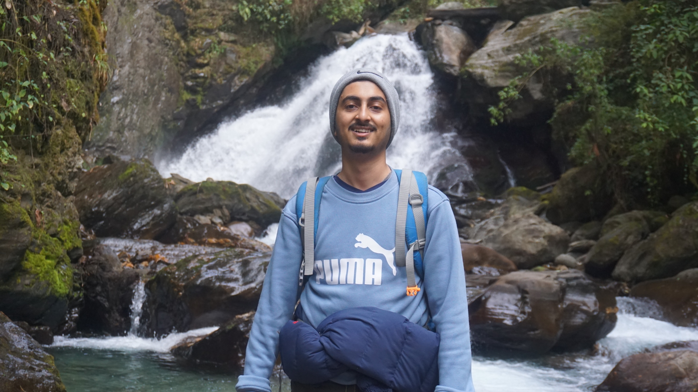

Machine Learning Engineer
Building AI from the roof of the world.
01 / About
Machine Learning Engineer with 2.5+ years of experience in Generative AI, RAG architectures, and Cloud-Based AI solutions across Fintech and Healthcare sectors. I build systems that think, speak, and reason — from text-to-SQL chatbots to voice AI agents that schedule patients in real time.
02 / Experience
03 / Projects

Curious by nature.
Engineer by craft.
04 / Skills
05 / Contact
Open to collaboration, interesting problems, and building the future of AI.
Download Resume